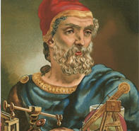

Famous Mathematicians

Archimedes
Archimedes (c. 287 –c. 212 BC) was a Greek mathematician, physicist, engineer, inventor, and
astronomer. Although few details of his life are known, he is regarded as one
of the leading scientists in classical antiquity. Generally considered the greatest
mathematician of antiquity and one of the greatest of all time,
Archimedes anticipated modern calculus and analysis by applying concepts of
infinitesimals and the method of exhaustion to derive and rigorously prove a
range of geometrical theorems, including the area of a circle, the surface area
and volume of a sphere, and the area under a parabola.
Other mathematical achievements include deriving an accurate approximation of
pi, defining and investigating the spiral bearing his name, and creating a system
using exponentiation for expressing very large numbers. He was also one of the
first to apply mathematics to physical phenomena, founding hydrostatics and
statics, including an explanation of the principle of the lever. He is credited with
designing innovative machines, such as his screw pump, compound pulleys, and
defensive war machines to protect his native Syracuse from invasion.
[Wikipedia]

Srinivasa Ramanujan
Srinivasa Ramanujan ( 22 December 1887 – 26 April 1920)was an Indian mathematician who lived during
the British Rule in India. Though he had almost no formal training in pure
mathematics, he made substantial contributions to mathematical analysis, number
theory, infinite series, and continued fractions, including solutions to mathematical
problems then considered unsolvable. Ramanujan initially developed his own
mathematical research in isolation: "He tried to interest the leading professional
mathematicians in his work, but failed for the most part. What he had to show them
was too novel, too unfamiliar, and additionally presented in unusual ways; they
could not be bothered". Seeking mathematicians who could better understand his
work, in 1913 he began a postal partnership with the English mathematician G. H.
Hardy at the University of Cambridge, England.
Recognizing Ramanujan's work as
extraordinary, Hardy arranged for him to travel to Cambridge. In his notes,
Ramanujan had produced groundbreaking new theorems, including some that
Hardy said had "defeated him and his colleagues completely", in addition to
rediscovering recently proven but highly advanced results.
During his short life, Ramanujan independently compiled nearly 3,900 results
(mostly identities and equations). Many were completely novel; his original and
highly unconventional results, such as the Ramanujan prime, the Ramanujan theta
function, partition formulae and mock theta functions, have opened entire new
areas of work and inspired a vast amount of further research.
[Wikipedia]